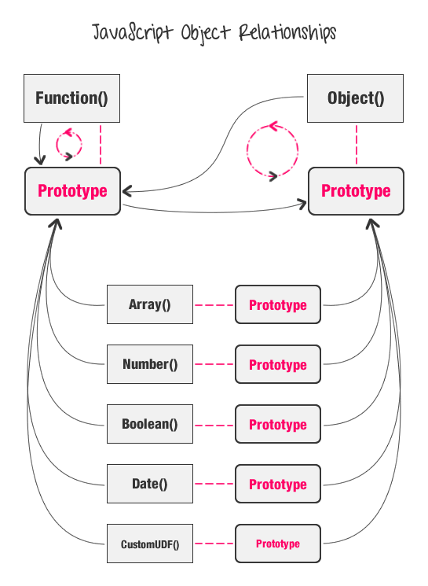
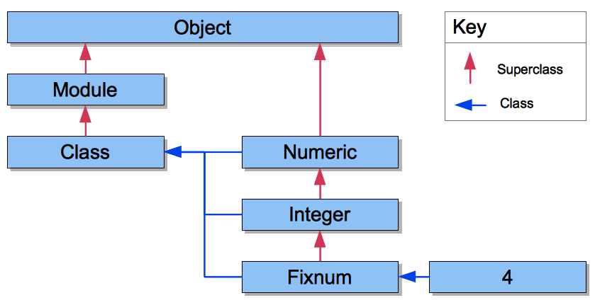

Journey Through Dev Bootcamp
Ruby Hash vs JavaScript Objects
FJ Collins Jr. - February 14, 2016
This week, we journey into JavaScript after learning Ruby and its powerful built-in methods for the last four weeks. At first, I was a little nervous because this is my first experience with any type of programming language, therefore, I had no expectation of what lied ahead. Little did I know, there were many similarities between Ruby and JavaScipt(JS). One in particular was Ruby's Hashes compared to JS' Objects. Both are a collection of data that uses a key/value pairing system. However, after digging a little deeper, you can tell what separates the two.
Similarities
The first thing that stood out between Ruby hashes and JS objects were their syntax (how they looked):
dog = {name: "Nico", age: 7, type: "Yorkshire Terrier"}
var dog = {name: "Nico", age: 7, type: "Yorkshire Terrier"};
# Ruby Hash
dog[:age]
// JS Object
dog.age;
// or
dog["age"]; // depending on how it was created
Now let's say we want to add more items to our collections of data - we can take it a step further and say, lets add an array to our collections of data...
# Ruby Hash
dog[:color] = ["black", "gold", "white"]
// JS Object
dog.color = ["black", "gold", "white"];
Some Differences
One huge difference is that an object in JS can take a function as a value. Now understanding the difference between Ruby methods and JS functions is another blog post within itself, however, Ruby methods are not objects and therefore, cannot be accepted as a value within a hash.
// JS Object
dog.bark = function() {
console.log("woof, woof!")
}
dog.bark()
=> woof, woof!
I hope this gives you a better understanding of Ruby hashes and JS objects. Please come back soon!
I hope you all enjoyed this post as it is one of many on my journey to become a software engineer. Please comment and ask any questions that arise - I will gladly respond. Thank you!